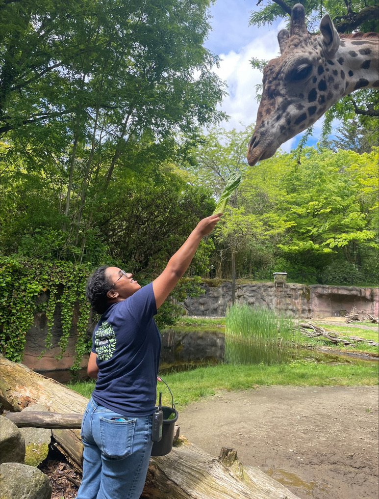

ORIGIN
I've grown to see conservation as a commitment and advocation for preservation of the rhythmic nature of life around us, and the natural world they inhabit. It's a growing an understanding of the rippling breathe our choices have on organic systems.

THE FIRST ECHO
In the beginning, I viewed conservation as an abstract idea rather than a mindset in practice. When I started at the Oregon Zoo, my first hand-experiences transformed my admiration for animals and conservation into a whole new personal meaning. Observing these animals up close had an indescribable impact on me. Standing face-to-face with a giraffe as it reached out or locking eyes with a lion, radiating with power and regality, were awe-inspiring moments I could never grow tired of. Sharing these encounters and the work I was part of not only deepened my appreciation for conservation but also sparked curiosity and inspiration in others as well.

NEXT ON THE JOURNEY...
CONSERVATION HIGHLIGHTS